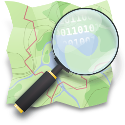

งานวิจัยการประยุกต์ใช้ปัญญาประดิษฐ์
วิธีการเรียนรู้เชิงลึกสำหรับการปรับปรุงข้อมูลสถานที่สำคัญด้วยข้อมูลภาพ Street View
สำรวจการตรวจจับและปรับปรุงข้อมูล POI จากภาพ Street View พร้อมเปรียบเทียบกับแหล่งข้อมูลแผนที่อื่นในเทศบาลนครเชียงใหม่
ข้อมูลสำคัญ
สรุปชุดข้อมูล
ชุดข้อมูลสำหรับการเปรียบเทียบ
ข้อมูลที่ใช้
Google Street View
ภาพถนนสำหรับตรวจจับป้าย อ่านข้อความ และสกัดข้อมูล POI

OpenStreetMap
ข้อมูลสถานที่เปิดสำหรับเทียบชื่อ หมวดหมู่ และตำแหน่ง
Google Places
ข้อมูลสถานที่สำหรับเปรียบเทียบกับผลจาก Street View
เลือกดูข้อมูล
ไปยังส่วนสำรวจ
พื้นที่ศึกษาเฉพาะ
เปรียบเทียบข้อมูลย่านนิมมาน
สำรวจ POI จาก Street View, OpenStreetMap และ Google Places ภายใน buffer 10 เมตรจากแนวถนนนิมมานเหมินท์
ผลการเปรียบเทียบใน buffer 10 เมตร
สรุปจำนวน POI ตามประเภทและแหล่งข้อมูล
กราฟและตารางสรุปจำนวนจุด POI จาก Street View, OpenStreetMap และ Google Places บริเวณถนนนิมมานเหมินท์
จำนวน POI จำแนกตามหมวดหมู่หลัก
จำนวน POI ตามแหล่งข้อมูล
ตารางสรุปจำนวนจุด POI
| หมวดหมู่หลัก | Street View | OpenStreetMap | Google Places | รวม |
|---|
การวิเคราะห์เปรียบเทียบ
ผลการจับคู่และช่องว่างข้อมูล
หน้านี้ใช้สรุปผลเมื่อกำหนดเกณฑ์จับคู่ชื่อสถานที่ร่วมกับระยะห่างเชิงพื้นที่แล้ว
ขั้นตอนถัดไป: สร้างตารางจับคู่ POI ระหว่าง SV, OSM และ Google โดยระบุเกณฑ์ระยะห่างและความคล้ายของชื่ออย่างชัดเจน แล้วนำผลมาเติมในหน้านี้
พบในทุกแหล่ง
รอผลจับคู่ใช้ตรวจสอบความสอดคล้องของข้อมูล
พบเฉพาะ Street View
รอผลจับคู่ผู้สมัคร POI ใหม่หรือข้อมูลที่ฐานเดิมยังไม่มี
พบเฉพาะฐานเดิม
รอผลจับคู่ข้อจำกัดด้านภาพ การตรวจจับ หรือการอ่านข้อความ
ชุดข้อมูล POI จาก Street View
ภาพป้ายและข้อมูล POI
สำรวจผลการตรวจจับป้าย อ่านข้อความด้วย OCR ตีความด้วย LLM และปรับตำแหน่งจุดเชิงประมาณตามทิศทางภาพ
กำลังอ่านข้อมูล POI…